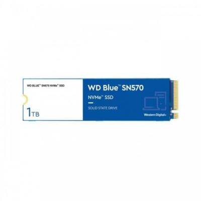

<div id="container-almacenamiento">

    <div class="container my-5">
    <div class="card shadow-lg border-0">
      <div class="card-body p-5">

        <h1 class="mb-4 text-primary">SSD WD Blue SN570 NVMe</h1>

        <div class="row align-items-center">
          <!-- Columna del texto -->
          <div class="col-md-8">
            <p class="lead">
              Permanezca en el momento y cree más allá de sus expectativas con el SSD WD Blue SN570 NVMe.  
              Esta potente unidad interna ofrece hasta 5 veces la velocidad de nuestras mejores SSD SATA, 
              para que pueda dejar volar su imaginación y preocuparse menos por los retrasos o los tiempos de carga de la PC.
            </p>

            <a href="https://www.pccomponentes.com/wd-blue-sn570-ssd-1tb-m2-nvme" target="_blank">PCcomponentes</a>
          </div>

          <!-- Columna de la imagen -->
          <div class="col-md-4 text-center">
            
          </div>
        </div>
        
        <hr>

        <h3 class="mt-4 text-secondary">Características</h3>
        <ul class="mb-4">
          <li><strong>Optimice su rendimiento:</strong> Cree su motor de creación ideal. Actualice su sistema u optimice su próxima compilación personalizada con el factor de forma delgado M.2 2280. Todo lo que necesita es una ranura NVMe.</li>
          <li><strong>Permanezca en el momento:</strong> Mantenga su imaginación fluyendo mientras crea más rápido mientras mantiene un bajo consumo de energía. Con velocidades de lectura de hasta 3500 MB/s (modelos 500GB - 1TB), su sistema puede funcionar hasta 5 veces más rápido que nuestras mejores SSD SATA para que pueda permanecer en su momento creativo.</li>
          <li><strong>Un estándar de confiabilidad:</strong> Valoramos su contenido. Es por eso que las funciones de confiabilidad de WD Blue ayudan a proteger su contenido para que pueda preocuparse menos por perder su brillante trabajo.</li>
          <li><strong>Obtenga más tranquilidad:</strong> Trabaje con más confianza y mantenga sus proyectos en orden, ya que Western Digital SSD Dashboard descargable lo ayuda a monitorear el estado de su unidad, el espacio disponible, la temperatura y más.</li>
          <li><strong>Ahorre en espacio:</strong> Empaque una gran cantidad de rendimiento en su PC de factor de forma pequeño con un SSD M.2 2280 PCIe® Gen3 x4 NVMe™ de un solo lado.</li>
          <li><strong>Organizado:</strong> Realice copias de seguridad de sus fotos, vídeos y otros archivos personales con Acronis® True Image™ para el software de Western Digital incluido.</li>
        </ul>

        <h3 class="text-secondary">Especificaciones</h3>

        <div class="accordion" id="ssdAccordion">

          <!-- Características -->
          <div class="accordion-item">
            <h2 class="accordion-header" id="headingFeatures">
              <button class="accordion-button" type="button" data-bs-toggle="collapse" data-bs-target="#collapseFeatures" aria-expanded="true">
                Características
              </button>
            </h2>
            <div id="collapseFeatures" class="accordion-collapse collapse show" data-bs-parent="#ssdAccordion">
              <div class="accordion-body">
                <ul>
                  <li>Versión NVMe: 1.4</li>
                  <li>Factor de forma de disco SSD: M.2</li>
                  <li>SDD, capacidad: 1000 GB</li>
                  <li>Interfaz: PCI Express 3.0</li>
                  <li>NVMe: Sí</li>
                  <li>Componente para: PC</li>
                  <li>Encriptación de hardware: No</li>
                  <li>Velocidad de lectura: 3500 MB/s</li>
                  <li>Velocidad de escritura: 3000 MB/s</li>
                  <li>Carriles datos de interfaz PCI Express: x4</li>
                  <li>Calificación TBW: 600</li>
                </ul>
              </div>
            </div>
          </div>

          <!-- Peso y dimensiones -->
          <div class="accordion-item">
            <h2 class="accordion-header" id="headingDimensions">
              <button class="accordion-button collapsed" type="button" data-bs-toggle="collapse" data-bs-target="#collapseDimensions">
                Peso y dimensiones
              </button>
            </h2>
            <div id="collapseDimensions" class="accordion-collapse collapse" data-bs-parent="#ssdAccordion">
              <div class="accordion-body">
                <ul>
                  <li>Ancho: 22 mm</li>
                  <li>Profundidad: 80 mm</li>
                  <li>Altura: 2,38 mm</li>
                </ul>
              </div>
            </div>
          </div>

        </div>

      </div>
    </div>
  </div>

</div>